已通过 · 12 帧Passed · 12 frames · 新采 RGB-DNew RGB-D
match_and_pick_from_conveyor
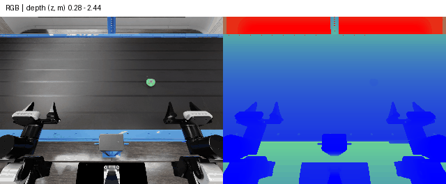
真实 Isaac Sim 场景新采 RGB-D；保持机器人状态，验证传送带运动及传感器，未评测抓取成功。New RGB-D in the actual Isaac Sim task; hold robot state to verify conveyor motion and sensors, without evaluating grasp success.
Z · m · 0.207–2.460 m · 有效valid 100.0%
来源与数值校验Provenance and numeric checks已通过 · 12 帧Passed · 12 frames · 新采 RGB-DNew RGB-D
push_puck_collision
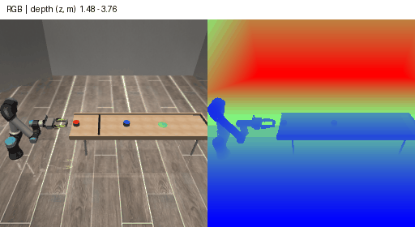
现有 CollisionEnv 新采深度。该样本因 second_strike 失败，未发生 A–B 碰撞；不是成功示范。New depth in existing CollisionEnv. This sample failed with second_strike before A–B collision; it is not a successful demo.
Z · m · 1.451–3.817 m · 有效valid 100.0%
来源与数值校验Provenance and numeric checks已通过 · 12 帧Passed · 12 frames · 读取已有深度Stored depth read
PandaFingerArticulationDiagnostic-v0
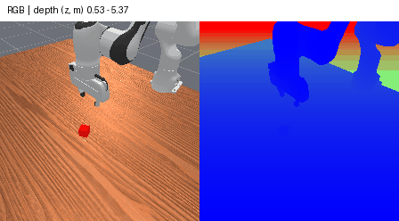
项目诊断 HDF5 已存 RGB、毫米深度及相机参数；没有下载官方专家全库。Project diagnostic HDF5 stores RGB, millimeter depth and calibration; the official expert corpus was not downloaded.
Z · m · 0.507–6.015 m · 有效valid 100.0%
来源与数值校验Provenance and numeric checks已通过 · 12 帧Passed · 12 frames · 读取已有深度Stored depth read
RollBall-v1
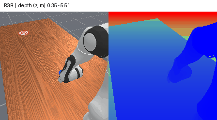
项目诊断 HDF5 已存 RGB、毫米深度及相机参数；没有下载官方专家全库。Project diagnostic HDF5 stores RGB, millimeter depth and calibration; the official expert corpus was not downloaded.
Z · m · 0.307–5.780 m · 有效valid 100.0%
来源与数值校验Provenance and numeric checks已通过 · 12 帧Passed · 12 frames · 读取已有深度Stored depth read
PullCubeTool-v1
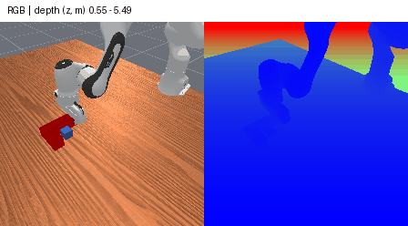
项目诊断 HDF5 已存 RGB、毫米深度及相机参数；没有下载官方专家全库。Project diagnostic HDF5 stores RGB, millimeter depth and calibration; the official expert corpus was not downloaded.
Z · m · 0.544–5.986 m · 有效valid 100.0%
来源与数值校验Provenance and numeric checks已通过 · 12 帧Passed · 12 frames · 读取已有深度Stored depth read
PokeCube-v1
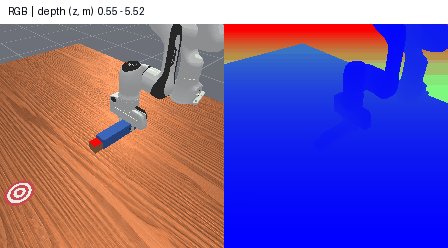
项目诊断 HDF5 已存 RGB、毫米深度及相机参数；没有下载官方专家全库。Project diagnostic HDF5 stores RGB, millimeter depth and calibration; the official expert corpus was not downloaded.
Z · m · 0.544–6.015 m · 有效valid 100.0%
来源与数值校验Provenance and numeric checks已通过 · 12 帧Passed · 12 frames · 读取已有深度Stored depth read
PickCube-v1
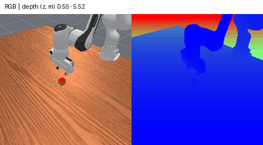
项目诊断 HDF5 已存 RGB、毫米深度及相机参数；没有下载官方专家全库。Project diagnostic HDF5 stores RGB, millimeter depth and calibration; the official expert corpus was not downloaded.
Z · m · 0.544–6.015 m · 有效valid 100.0%
来源与数值校验Provenance and numeric checks已通过 · 12 帧Passed · 12 frames · 读取已有深度Stored depth read
PushT-v1
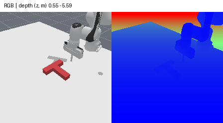
项目诊断 HDF5 已存 RGB、毫米深度及相机参数；没有下载官方专家全库。Project diagnostic HDF5 stores RGB, millimeter depth and calibration; the official expert corpus was not downloaded.
Z · m · 0.544–6.015 m · 有效valid 100.0%
来源与数值校验Provenance and numeric checks已通过 · 12 帧Passed · 12 frames · 按原状态重渲染Original-state rendering
OpenDrawer
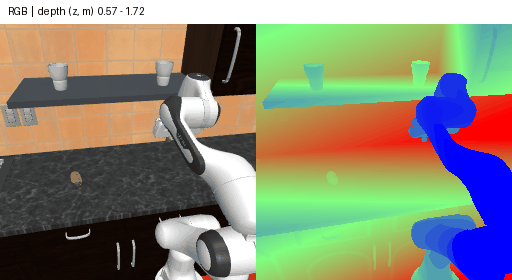
原 XML／状态／相机重渲染；与原视频 RGB MAE 8.25/255。本页 RGB 与 depth 为同次新渲染。Replay original XML/states/cameras; original-video RGB MAE 8.25/255. Displayed RGB/depth are rendered together.
Z · m · 0.441–1.827 m · 有效valid 100.0%
来源与数值校验Provenance and numeric checks已通过 · 12 帧Passed · 12 frames · 按原状态重渲染Original-state rendering
PanTransfer
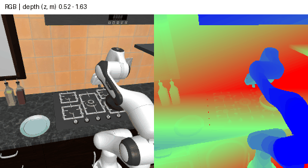
原 XML／状态／相机重渲染；与原视频 RGB MAE 6.47/255。本页 RGB 与 depth 为同次新渲染。Replay original XML/states/cameras; original-video RGB MAE 6.47/255. Displayed RGB/depth are rendered together.
Z · m · 0.470–1.753 m · 有效valid 100.0%
来源与数值校验Provenance and numeric checks已通过 · 12 帧Passed · 12 frames · 按原状态重渲染Original-state rendering
CloseFridge
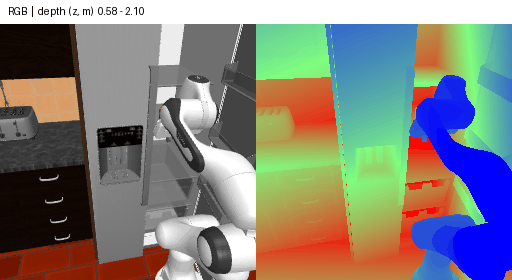
原 XML／状态／相机重渲染；与原视频 RGB MAE 11.60/255。本页 RGB 与 depth 为同次新渲染。Replay original XML/states/cameras; original-video RGB MAE 11.60/255. Displayed RGB/depth are rendered together.
Z · m · 0.459–2.850 m · 有效valid 100.0%
来源与数值校验Provenance and numeric checks已通过 · 12 帧Passed · 12 frames · 按原状态重渲染Original-state rendering
SlideDishwasherRack
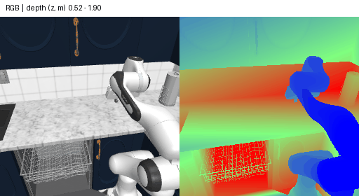
原 XML／状态／相机重渲染；与原视频 RGB MAE 2.96/255。本页 RGB 与 depth 为同次新渲染。Replay original XML/states/cameras; original-video RGB MAE 2.96/255. Displayed RGB/depth are rendered together.
Z · m · 0.452–2.193 m · 有效valid 100.0%
来源与数值校验Provenance and numeric checks已通过 · 12 帧Passed · 12 frames · 按原状态重渲染Original-state rendering
StackBowlsCabinet
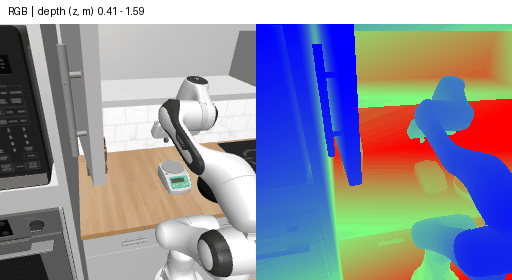
原 XML／状态／相机重渲染；与原视频 RGB MAE 2.65/255。本页 RGB 与 depth 为同次新渲染。Replay original XML/states/cameras; original-video RGB MAE 2.65/255. Displayed RGB/depth are rendered together.
Z · m · 0.353–1.741 m · 有效valid 100.0%
来源与数值校验Provenance and numeric checks已通过 · 12 帧Passed · 12 frames · 按原状态重渲染Original-state rendering
CoffeeSetupMug
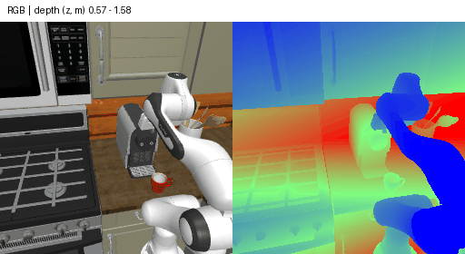
原 XML／状态／相机重渲染；与原视频 RGB MAE 6.29/255。本页 RGB 与 depth 为同次新渲染。Replay original XML/states/cameras; original-video RGB MAE 6.29/255. Displayed RGB/depth are rendered together.
Z · m · 0.468–1.728 m · 有效valid 100.0%
来源与数值校验Provenance and numeric checks已通过 · 12 帧Passed · 12 frames · 按原状态重渲染Original-state rendering
SlideToasterOvenRack
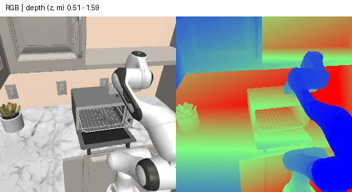
原 XML／状态／相机重渲染；与原视频 RGB MAE 2.99/255。本页 RGB 与 depth 为同次新渲染。Replay original XML/states/cameras; original-video RGB MAE 2.99/255. Displayed RGB/depth are rendered together.
Z · m · 0.463–1.714 m · 有效valid 100.0%
来源与数值校验Provenance and numeric checks已通过 · 12 帧Passed · 12 frames · 按原状态重渲染Original-state rendering
StirVegetables
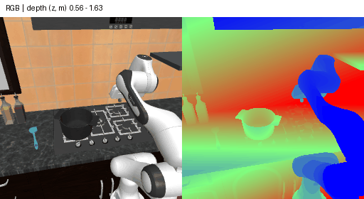
原 XML／状态／相机重渲染；与原视频 RGB MAE 7.12/255。本页 RGB 与 depth 为同次新渲染。Replay original XML/states/cameras; original-video RGB MAE 7.12/255. Displayed RGB/depth are rendered together.
Z · m · 0.463–1.775 m · 有效valid 100.0%
来源与数值校验Provenance and numeric checks已通过 · 12 帧Passed · 12 frames · 按原状态重渲染Original-state rendering
ToolHang
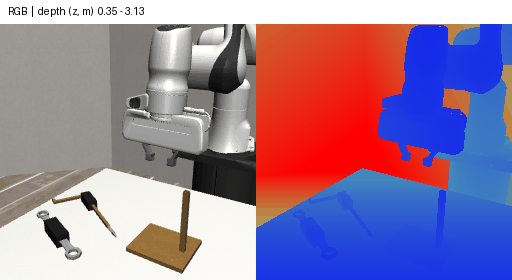
原 demo_0 完整 MuJoCo 状态重渲染 RGB-D；尚无原 RGB 逐像素对照。Full MuJoCo states from original demo_0 rendered as paired RGB-D; no original RGB pixel comparison.
Z · m · 0.323–3.272 m · 有效valid 100.0%
来源与数值校验Provenance and numeric checks已通过 · 12 帧Passed · 12 frames · 新采 RGB-DNew RGB-D
reach_and_drag
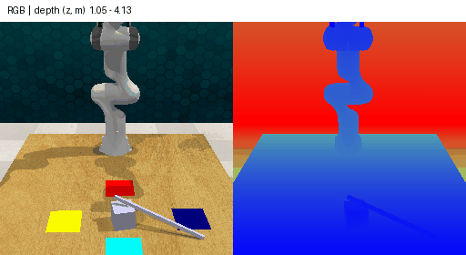
新采 RLBench 专家示范；任务 Python/TTM 与 PerAct 固定版本相同，未读取作者 Drive 归档。New RLBench expert demo; task Python/TTM match pinned PerAct assets. The author Drive archive was not read.
Z · m · 0.937–4.157 m · 有效valid 100.0%
来源与数值校验Provenance and numeric checks已通过 · 12 帧Passed · 12 frames · 读取已有深度Stored depth read
MOVi-C
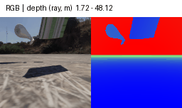
官方 TFRecord 原生深度；数值为 ray distance，反投影前须转 Z。Official TFRecord depth stores ray distance; convert to Z before back-projection.
RAY · m · 1.645–48.219 m · 有效valid 100.0%
来源与数值校验Provenance and numeric checks已通过 · 12 帧Passed · 12 frames · 新采 RGB-DNew RGB-D
CoPhy
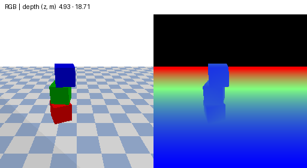
仅 Blocktower：作者函数和 URDF 的新 RGB-D 序列；没有执行完整 AB/CD 协议或其他子集。Blocktower only: new RGB-D with author functions/URDFs; no complete AB/CD protocol or other subsets.
Z · m · 4.867–19.729 m · 有效valid 66.3%
来源与数值校验Provenance and numeric checks已通过 · 12 帧Passed · 12 frames · 按原状态重渲染Original-state rendering
AdroitHandHammer-v1
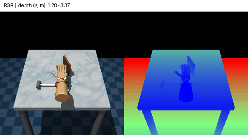
原 D4RL qpos/qvel/board_pos 重渲染；所选 Minari 实文件只有 success，没有完整状态。Replay original D4RL qpos/qvel/board_pos; the selected Minari file has only success, without full states.
Z · m · 1.164–3.464 m · 有效valid 66.2%
来源与数值校验Provenance and numeric checks已通过 · 12 帧Passed · 12 frames · 读取已有深度Stored depth read
Physion-v1.5-OCP
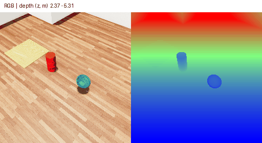
原始 TDW float32 深度和矩阵；同帧 RGB-D 从 1024² 同步步进采样为 256²。Original TDW float32 depth and matrices; aligned RGB-D strided jointly from 1024² to 256².
Z · m · 2.347–5.668 m · 有效valid 100.0%
来源与数值校验Provenance and numeric checks已通过 · 12 帧Passed · 12 frames · 新采 RGB-DNew RGB-D
sweep_to_dustpan_of_size
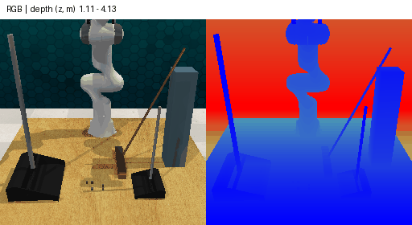
新采 RLBench 专家示范；任务 Python/TTM 与 PerAct 固定版本相同，未读取作者 Drive 归档。New RLBench expert demo; task Python/TTM match pinned PerAct assets. The author Drive archive was not read.
Z · m · 1.006–4.157 m · 有效valid 100.0%
来源与数值校验Provenance and numeric checks未验收／无 GTUnaccepted / no GT · 未完成／不适用Pending / inapplicable
CLEVRER
标准发布无像素深度真值；本轮没有用模型估计代替。Standard release has no pixel-depth GT; no estimated depth substituted.
未验收／无 GTUnaccepted / no GT · 未完成／不适用Pending / inapplicable
TurnFaucet-v1
匹配 v1 数据和资产仍未验收；旧版 v0 GIF 不作为 v1 深度样本。Matching v1 data/assets remain unaccepted; legacy v0 GIF is not a v1 depth sample.
已通过 · 12 帧Passed · 12 frames · 读取已有深度Stored depth read
beat_the_rotating_buzz
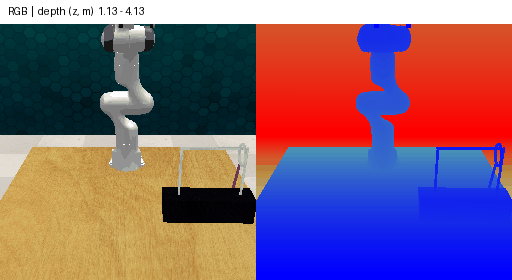
项目专家原始观测：解码 RGB24 深度；没有使用 WM 预测。Project expert observations: decoded RGB24 depth; no WM predictions.
Z · m · 1.017–4.171 m · 有效valid 100.0%
来源与数值校验Provenance and numeric checks已通过 · 12 帧Passed · 12 frames · 读取已有深度Stored depth read
beat_the_rotating_buzz_high_speed
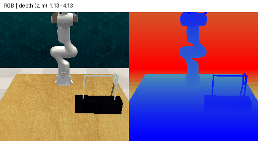
项目专家原始观测：解码 RGB24 深度；没有使用 WM 预测。Project expert observations: decoded RGB24 depth; no WM predictions.
Z · m · 1.017–4.171 m · 有效valid 100.0%
来源与数值校验Provenance and numeric checks已通过 · 12 帧Passed · 12 frames · 读取已有深度Stored depth read
insert_onto_rotating_peg
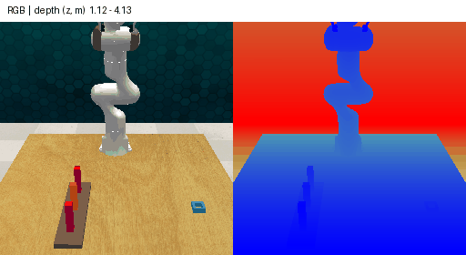
项目专家原始观测：解码 RGB24 深度；没有使用 WM 预测。Project expert observations: decoded RGB24 depth; no WM predictions.
Z · m · 0.898–4.171 m · 有效valid 100.0%
来源与数值校验Provenance and numeric checks已通过 · 12 帧Passed · 12 frames · 读取已有深度Stored depth read
insert_onto_rotating_peg_high_speed
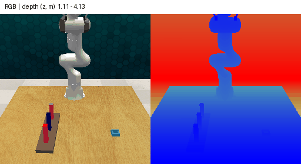
项目专家原始观测：解码 RGB24 深度；没有使用 WM 预测。Project expert observations: decoded RGB24 depth; no WM predictions.
Z · m · 0.902–4.171 m · 有效valid 100.0%
来源与数值校验Provenance and numeric checks已通过 · 12 帧Passed · 12 frames · 读取已有深度Stored depth read
pick_moving_target_on_the_table
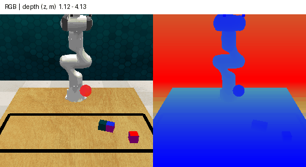
项目专家原始观测：解码 RGB24 深度；没有使用 WM 预测。Project expert observations: decoded RGB24 depth; no WM predictions.
Z · m · 1.017–4.171 m · 有效valid 100.0%
来源与数值校验Provenance and numeric checks已通过 · 12 帧Passed · 12 frames · 读取已有深度Stored depth read
pick_moving_target_on_the_table_high_speed
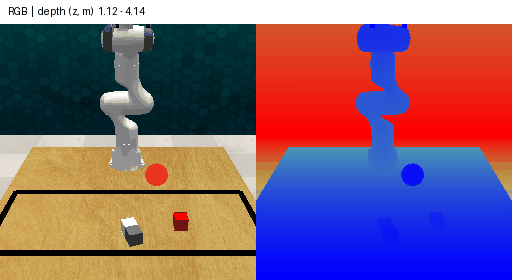
项目专家原始观测：解码 RGB24 深度；没有使用 WM 预测。Project expert observations: decoded RGB24 depth; no WM predictions.
Z · m · 1.017–4.171 m · 有效valid 100.0%
来源与数值校验Provenance and numeric checks已通过 · 12 帧Passed · 12 frames · 读取已有深度Stored depth read
place_cups_on_rotating_frame
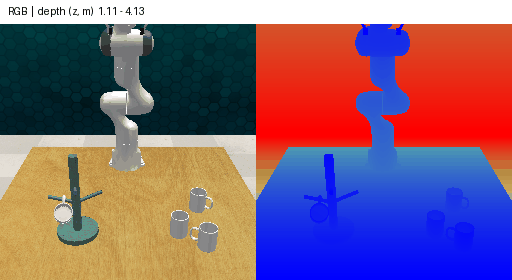
项目专家原始观测：解码 RGB24 深度；没有使用 WM 预测。Project expert observations: decoded RGB24 depth; no WM predictions.
Z · m · 0.879–4.171 m · 有效valid 100.0%
来源与数值校验Provenance and numeric checks已通过 · 12 帧Passed · 12 frames · 读取已有深度Stored depth read
place_cups_on_rotating_frame_high_speed
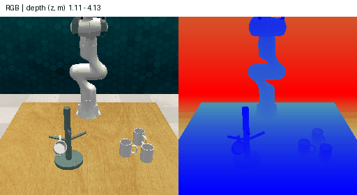
项目专家原始观测：解码 RGB24 深度；没有使用 WM 预测。Project expert observations: decoded RGB24 depth; no WM predictions.
Z · m · 0.949–4.171 m · 有效valid 100.0%
来源与数值校验Provenance and numeric checks已通过 · 12 帧Passed · 12 frames · 读取已有深度Stored depth read
remove_cups_from_rotating_frame
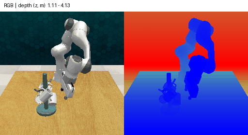
项目专家原始观测：解码 RGB24 深度；没有使用 WM 预测。Project expert observations: decoded RGB24 depth; no WM predictions.
Z · m · 1.024–4.171 m · 有效valid 100.0%
来源与数值校验Provenance and numeric checks已通过 · 12 帧Passed · 12 frames · 读取已有深度Stored depth read
remove_cups_from_rotating_frame_high_speed
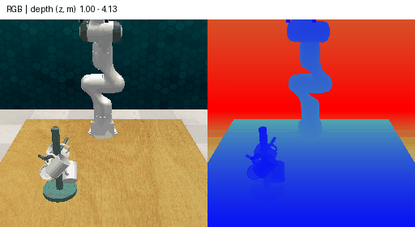
项目专家原始观测：解码 RGB24 深度；没有使用 WM 预测。Project expert observations: decoded RGB24 depth; no WM predictions.
Z · m · 0.894–4.171 m · 有效valid 100.0%
来源与数值校验Provenance and numeric checks已通过 · 12 帧Passed · 12 frames · 读取已有深度Stored depth read
put_rubbish_in_moving_bin
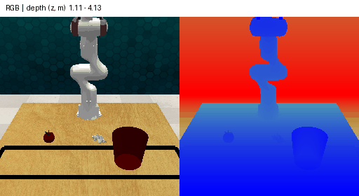
项目专家原始观测：解码 RGB24 深度；没有使用 WM 预测。Project expert observations: decoded RGB24 depth; no WM predictions.
Z · m · 1.016–4.171 m · 有效valid 100.0%
来源与数值校验Provenance and numeric checks已通过 · 12 帧Passed · 12 frames · 读取已有深度Stored depth read
put_rubbish_in_moving_bin_high_speed
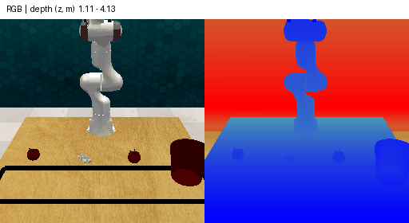
项目专家原始观测：解码 RGB24 深度；没有使用 WM 预测。Project expert observations: decoded RGB24 depth; no WM predictions.
Z · m · 1.017–4.171 m · 有效valid 100.0%
来源与数值校验Provenance and numeric checks已通过 · 12 帧Passed · 12 frames · 读取已有深度Stored depth read
push_moving_button
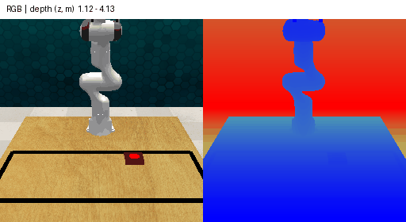
项目专家原始观测：解码 RGB24 深度；没有使用 WM 预测。Project expert observations: decoded RGB24 depth; no WM predictions.
Z · m · 1.016–4.171 m · 有效valid 100.0%
来源与数值校验Provenance and numeric checks已通过 · 12 帧Passed · 12 frames · 读取已有深度Stored depth read
push_moving_button_high_speed
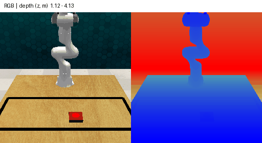
项目专家原始观测：解码 RGB24 深度；没有使用 WM 预测。Project expert observations: decoded RGB24 depth; no WM predictions.
Z · m · 0.990–4.171 m · 有效valid 100.0%
来源与数值校验Provenance and numeric checks已通过 · 12 帧Passed · 12 frames · 读取已有深度Stored depth read
moving_basketball_in_hoop
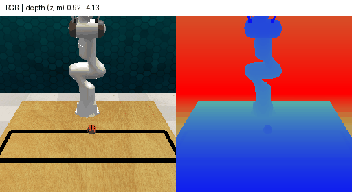
项目专家原始观测：解码 RGB24 深度；没有使用 WM 预测。Project expert observations: decoded RGB24 depth; no WM predictions.
Z · m · 0.690–4.171 m · 有效valid 100.0%
来源与数值校验Provenance and numeric checks已通过 · 12 帧Passed · 12 frames · 读取已有深度Stored depth read
moving_basketball_in_hoop_high_speed
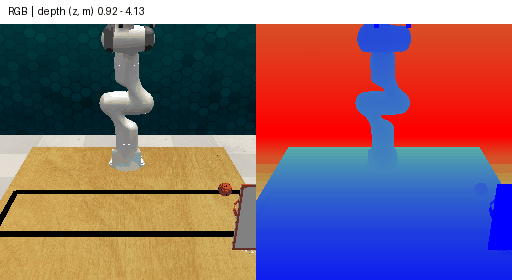
项目专家原始观测：解码 RGB24 深度；没有使用 WM 预测。Project expert observations: decoded RGB24 depth; no WM predictions.
Z · m · 0.693–4.171 m · 有效valid 100.0%
来源与数值校验Provenance and numeric checks已通过 · 12 帧Passed · 12 frames · 读取已有深度Stored depth read
PhysMani
项目专家原始观测：解码 RGB24 深度；没有使用 WM 预测。Project expert observations: decoded RGB24 depth; no WM predictions.
Z · m · 1.017–4.171 m · 有效valid 100.0%
来源与数值校验Provenance and numeric checks